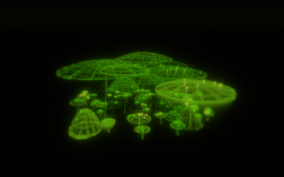
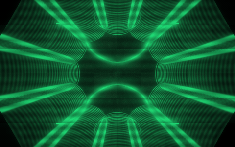
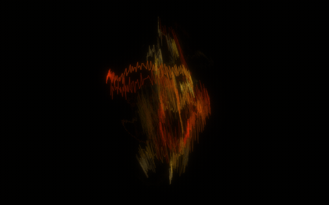
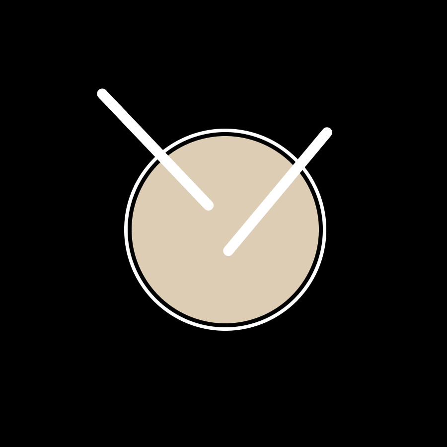
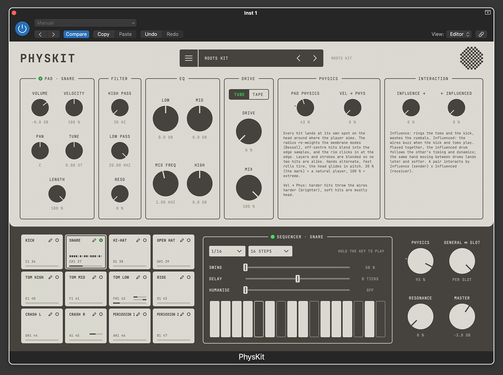
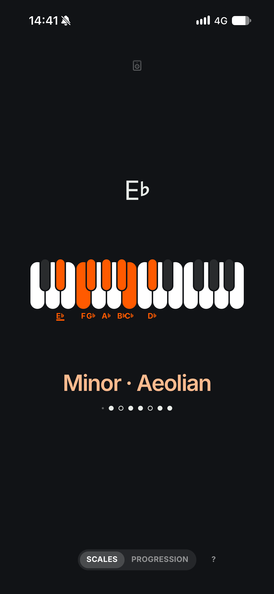
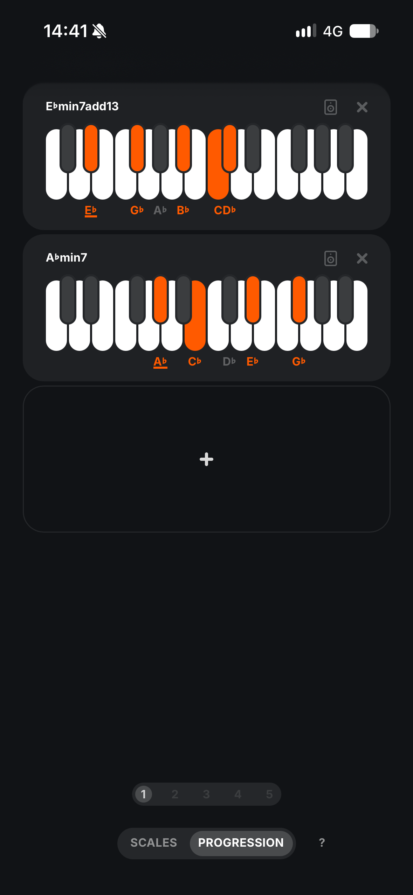
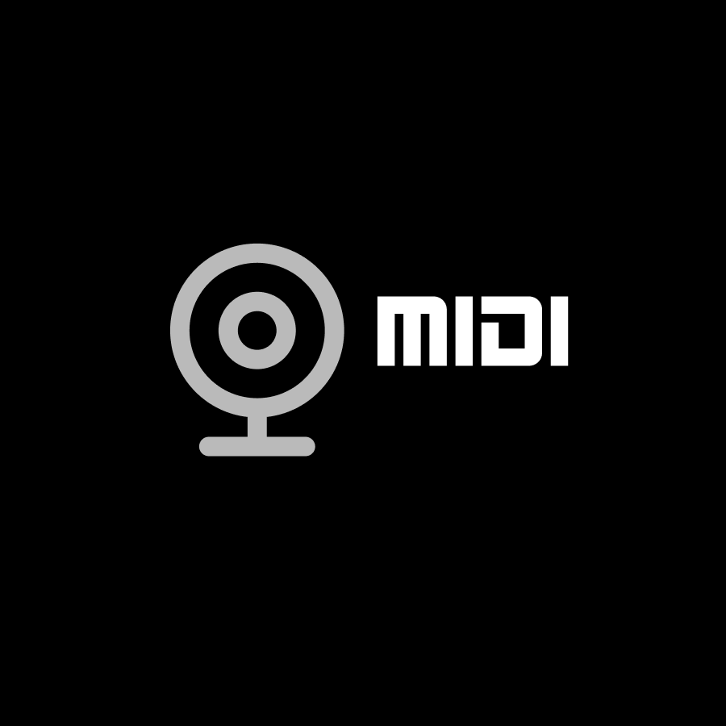
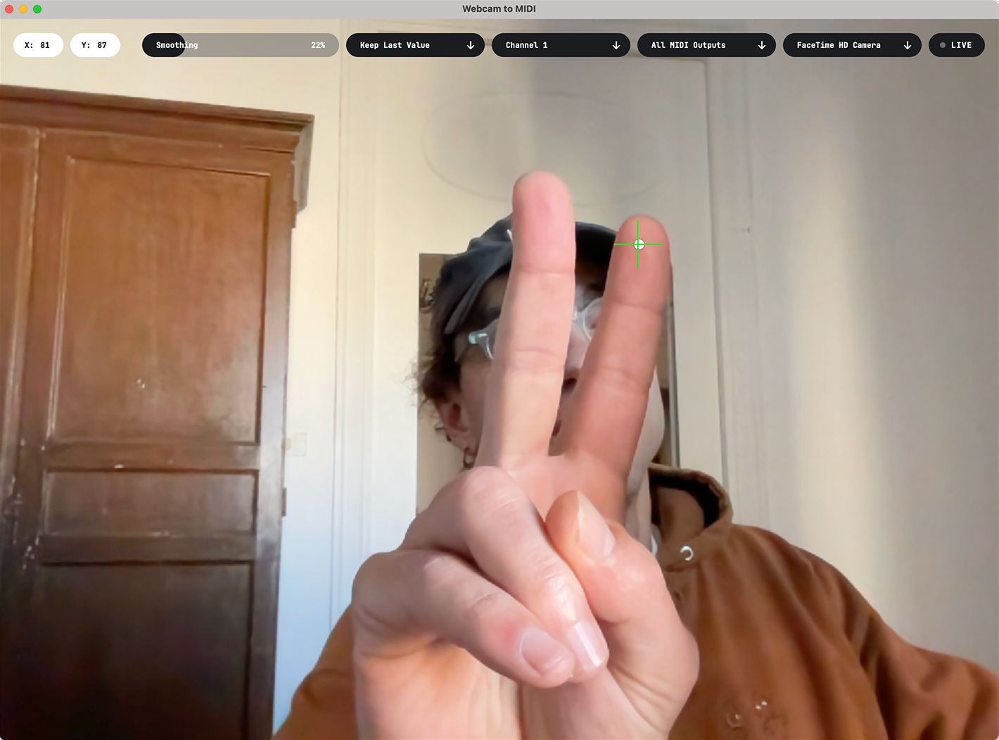

soundwatch
A music visualizer for macOS. It listens to whatever your Mac is playing, on any output, and draws it. Screen-record it for reels, release teasers and visuals, or just leave it running while you work.
macOS 14.2 or later
Apple Silicon and Intel


PhysKit
A pad-based drum machine plugin that adds a physical touch to the sound. It plays Logic's Drum Kit Designer kits, with a channel strip per pad and a Physics control that models how a real player hits the kit.
AU, VST3 and Standalone
macOS, Apple Silicon only
Needs Logic installed, no samples are included



Piano Scales
A pocket scale reference. A two-octave keyboard shows the notes of any key in all seven modes, from Major and Minor to Dorian, Lydian and Locrian. Tap or click left and right to change key, up and down to change mode.
Runs in the browser
Add it to your phone's home screen to use it offline


Webcam to MIDI
Turns your hand into a MIDI controller. It tracks your index fingertip with the webcam and sends its position to your DAW as two CC values, left to right on CC 20 and bottom to top on CC 21. Map them to a filter, a send, anything you'd ride with a knob. Tracking runs on your computer and the app makes no network requests.
macOS, Apple Silicon and Intel
Windows 10 and 11, needs loopMIDI
Download
Webcam to MIDI for macOS
Webcam to MIDI for Windows
Source
github.com/itymarcel/webcam-to-midi
All versions
Latest release